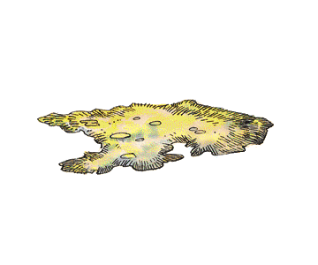

Mold

| Brown
| Russet
| Yellow
|
CLIMATE/TERRAIN:
| Subterranean
| Subterranean
| Subterranean
|
FREQUENCY
| Very rare
| Very rare
| Uncommon
|
ORGANIZATION:
| Patch
| Patch
| Patch
|
ACTIVITY CYCLE:
| Any
| Any
| Any
|
DIET:
| Heat
| Moisture
| Mental Energy
|
INTELLIGENCE:
| Non- (0)
| Non- (0)
| Not Ratable (0)
|
TREASURE:
| Nil
| Nil
| Nil
|
ALIGNMENT:
| Neutral
| Neutral
| Neutral
|
NO. APPEARING:
| 1 patch
| 1 patch
| 1 patch
|
ARMOR CLASS:
| 9
| 9
| 9
|
MOVEMENT:
| 0
| 0
| 0
|
HIT DICE:
| N/A
| N/A
| N/A
|
THAC0:
| N/A
| N/A
| N/A
|
NO. OF ATTACKS:
| 0
| 0
| 1
|
DAMAGE/ATTACK:
| N/A
| N/A
| N/A
|
SPECIAL ATTACKS:
| Freezing
| Spores
| Poison Spores
|
SPECIAL DEFENSES:
| Absorb Heat
| Immune to
| Affected only
|
|
| weapons, cold, fire
| by fire
|
MAGIC RESISTANCE:
| Nil
| Nil
| 20%
|
SIZE:
| S-L
| S-L
| S-L
|
MORALE:
| N/A
| N/A
| N/A
|
XP VALUE:
| 15
| 35
| 65
|
Molds are a variety of spore-producing fungi that form in decaying food or in
warm, moist places. These fungi usually have a woolly or furry texture. While
most molds are harmless, there are (at least) three varieties of monstrous molds
that pose a deadly threat to adventurers: brown, russet, and yellow mold.
Brown Mold
Brown mold is found in damp subterranean areas, such as caverns and caves. It
is light to golden brown in color. Brown mold feeds by absorbing heat, even
body heat; where brown mold grows, the temperature is below average. Direct
sunlight or ultraviolet light kills it.
If a warm-blooded creature comes within 5 feet of a brown mold, the mold
drains heat equal to 4d8 points of damage from its victim, per round. A ring of warmth provides complete protection against this attack. Brown mold grows instantly
from heat. If a torch is used in its vicinity, it doubles in size; if flaming
oil is used, it quadruples, and fireball-type spells cause it to grow eight-fold.
Brown mold is not fed by cold light sources (e.g., light, faerie fire). The only magic that affects it are disintegrate (which destroys it), plant-affecting magic, and cold spells. Ice storms or
walls of ice cause it to go dormant for 5d6 turns. A cold wand, white dragon breath, or a cone of cold kills it. Brown mold does not affect cold-using creatures such as white
dragons, winter wolves, ice toads, etc.
Russet Mold
Russet mold is golden-brown to rust red in color. It has a lumpy texture
similar to cold porridge; it is covered by short, hair-like growths that stand
upright and wave as if they were in a cold breeze. It resembles rust at distances
beyond 30 feet (70% chance of error). It is immune to weapons and most spells; it
is affected only by alcohol, acid, and salt, which kill it; a cure disease or a continual light spell also destroys it.
Russet mold continuously emits a cloud of spores in a three-foot radius. All
creatures in this cloud suffer 5d4 points of damage (per round in the cloud) and
must roll a successful saving throw vs. poison or become infected with spore
sickness. Victims of spore sickness are instantly paralyzed and die in 5d4
minutes unless a cure disease spell is cast on them.
Anyone who dies from spore sickness undergoes a transformation and begins to
sprout russet mold growths; when completely covered in mold (1d4+20 hours), he
becomes a mold man or vegepygmy. A hold plant spell will halt the growth of the mold for the duration of the spell, while a cure disease spell destroys it within an hour after death; after that, a wish is necessary to destroy it.
Yellow Mold
This mold is pale yellow to golden orange in color. If touched roughly, it may
(50% chance) emit a cloud of spores in a 10-foot radius. Any creature caught
in this cloud must roll a successful saving throw vs. poison or die. A cure disease spell and a resurrection spell within 24 hours are necessary to restore life.
Fire of any sort destroys yellow mold. A continual light spell renders it dormant for 2d6 turns.
Yellow mold colonies of over 300 square feet are sometimes sentient (1 in 6
chance). These molds sense creatures within 60 feet, and may project their spores
that distance. Twice per day, they may use a suggestion on someone within that radius; in addition to the saving throw, the victim
must successfully roll an Intelligence check or lose 1 point of Intelligence
permanently (it is devoured by the mold).
Level
| Dis/Sci
| Attack
| Power
| PSPs
|
| Dev
| Defense
| Score
|
|
1
| 2/0/2
| II/Nil
| 15
| 1d1x05
|
|
| (special)
|
|
|
Telepathy: mindwipe, id insinuation.
Metapsionics: psionic sense (1d100+20' range, no cost).
Only sentient yellow molds (1 in 6 chance) have psionic powers. Such creatures
are also immune to psionic attacks unless the creature is being aided by one
who can communicate with plants.
Index